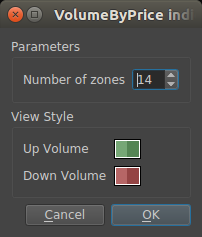

Volume by Price¶

Study Attributes¶
- Number of zones
The number of price levels drawn between the highest and lowest close prices.
- Up Volume, Down volume
The colors used to fill the bars drawn. The colors opacity/alpha-channel is used.
External Resources¶
Volume-by-Price [stockcharts.com]